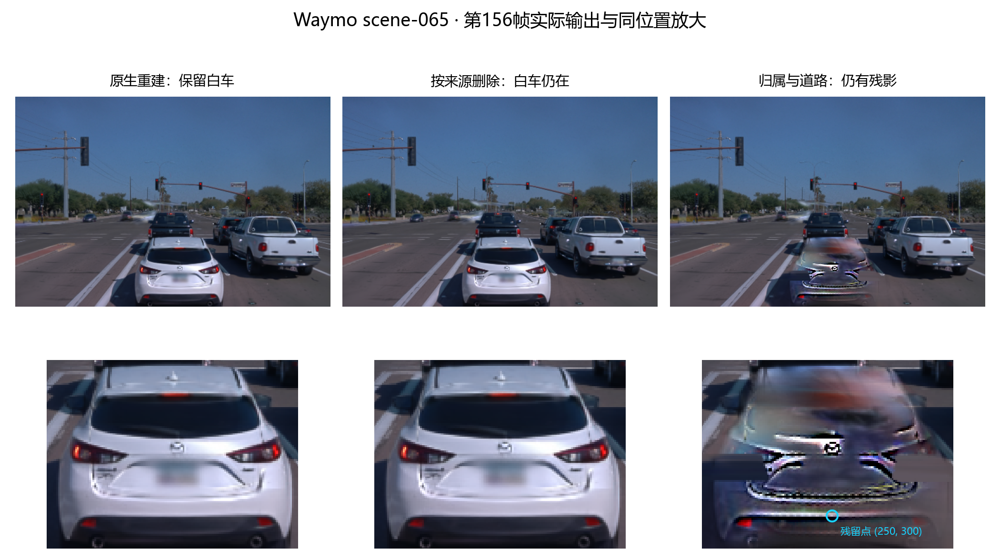
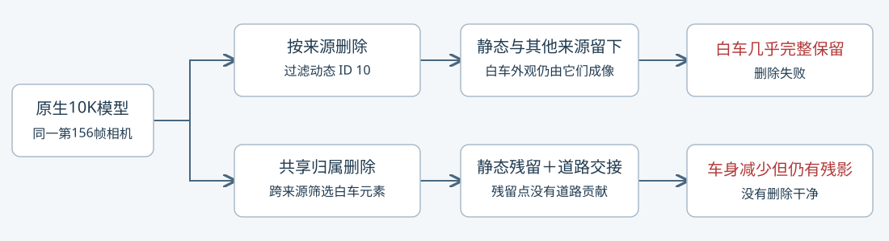

2026-11-09 · Waymo 验证集 scene-065 · raw156 / 15.6秒 · 只读复算，新增训练0步
用户指出的问题成立。原生来源删除后，白车几乎原样保留；共享归属与道路这一路移除了大部分车身，但有明显车形残影。两路都不能称为删车成功。


页面五列分别加载同一帧的实拍、原生保留、原生来源删除、归属与道路保留、归属与道路删除。没有把保留图错接到删除列。目标是正前方白色轿车 a9 / native ID 10 / NTjq-OhZ_97OMJ4xwJAxXg；右侧白色皮卡 a7 / ID 8 要保留。
原生删除的代码仅过滤动态来源 ID 10，保留全部静态元素和其他来源动态元素。第156帧的白车外观主要已经由这些保留元素成像，删 ID 10 几乎不改变画面。
| 原生保留：白车轮廓内的成像权重 | 平均 α × 透射率 |
|---|---|
| 静态层 | 77.0883% |
| 其他来源动态元素 | 22.8965% |
| 白车来源 ID 10 | 0.001174% |
区域是既有分割代理的12491个像素。该表解释原生统一渲染中的成像来源，不是物理对象占比或隐藏表面真值。其他来源中 ID 8 占11.9435%、ID 21占10.5745%，不能因此整组删除这两辆需要保留的邻车。
本机原生保留与删除 PNG 仅23个像素有量化差异。只读浮点复算中，变化大于1/255的像素同样只有23个；白车轮廓内平均 RGB 变化约 0.00001372（0–1尺度）。
共享归属依据159个构建时刻的可见贡献，将部分静态和其他来源元素也分给白车，再过滤目标组。它清掉了更多车身，但归属不是完整对象真值；漏留的静态元素和此前被遮挡的错误表示会重新显露。道路交接并没有覆盖所有残影。
第156帧最终删除图中，亮色残留点 (250, 300) 的目标贡献为0，静态贡献 0.887567，其他动态 0.001036，道路贡献0。该点仍主要由保留静态层成像。整片原白车区域平均静态贡献0.833873、其他动态0.042940、道路0.066495；这些贡献不能证明露出的表面正确。
已定位到表示与删除集合不一致：来源 ID 不等于车身全部成像元素，共享多数归属仍有遗漏或混合。精确的训练因果与每个残留元素的物理身份，尚未逐项证明。没有证据支持把页面刷新或重复过滤同一 ID 当作修复。
本次仅将原页面两列标题改为“删除尝试”，并明确注明后期仍留白车、最终仍有残影；原始995张逐帧 PNG、模型、算法和控件保留。静态引用、唯一 ID、控件及资产可用性检查通过，没有声称完成浏览器视觉验收。AutoDL保持开机，未使用subagent。
后续修复需要针对漏留车形的归属/表面表示，并核验删车后道路与邻车的显露；不能只以“目标通道变成0”验收。该排查未启动新训练或改实验方法。
第156帧原生、共享归属、最终三阶段KEEP/DELETE共6次只读复算，与已保存的原始输出最大RGB差 ≤ 1.20×10⁻⁷；模型参数未改动，未创建优化器。执行约 7.14 秒，训练更新0。
完整归因与逐像素数值 · 只读复算脚本 · 页面说明修改检查
原始float32 NPZ已保存于本机排查交付目录与上述远端audit目录；Git仅收录归因数值、原图和脚本。
远端执行：/root/autodl-tmp/envs/drivingeditor/bin/python -B /root/autodl-tmp/drivingeditor_repro/campaign/waymo_val065_native10k_20261108_r1/source/audit_frame156.py
远端证据：/root/autodl-tmp/drivingeditor_repro/campaign/waymo_val065_native10k_20261108_r1/audit_frame156_20261109_r1
任务：WAYMO-VAL065-A9-DELETE-AUDIT-20261109；failure_ledger_refs=[V82-F06]，更新同一卡；没有新增失败ID。